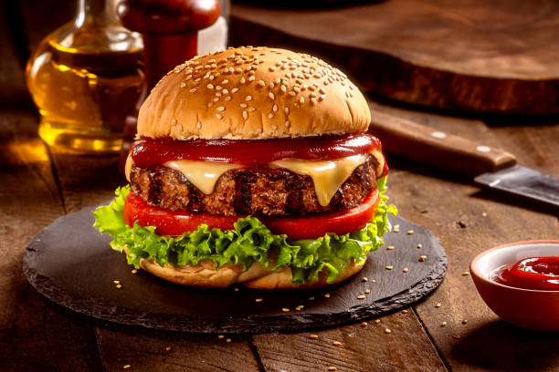

Home
Hamburger Recipe
This hamburger recipe yields 4 servings.

This delicious hamburger recipe will surely be everyone's focus for dinner tonight.
Using a touch of Worcestershire sauce and garlic powder creates a great spike of flavor for any occasion.
Ingredients
- 1 1/2 pounds 80% lean 20% fat ground beef or ground chuck
- 1 tablespoon Worcestershire sauce
- 1 1/2 teaspoons sesasoning salt
- 1 teaspoon garlic powder
- 1/2 teaspoon ground black pepper
- Optional: 4 slices of cheese
- 4 hamburger buns
- Optional: Lettuce, tomato, onion, pickles, etc.
Steps
- Preheat the grill to 375 degrees Farenheit.
-
In a large mixing bowl, add the beef,
Worcestershire sauce, salt, garlic powder, and pepper.
Use your hands (with gloves if you would like) to mix all of
the ingredients until they are combined.
-
Divide the ground beef mixture into fourths. Use your hands to
press it into the shape of a hamburger patty about 3/4 inch thick.
Make sure to press an indentation into the middle of the patty to
prevent bulging in the center of the hamber as it cooks.
Repeat until you have used the remaining mixture to make 4 hamburgers.
-
Place the burgers on the grill. Cook for about 4-5 minutes on each side,
until the burgers are at their desired doneness.
-
If you are adding cheese, place the slice of cheese on each patty about
1 minute before taking the burgers off the grill, as to give time for the cheese to melt.
- Serve the burgers with the hamburgers buns and any optional toppings.
Credit to thewholesomedish.com for the best classic burger recipe.